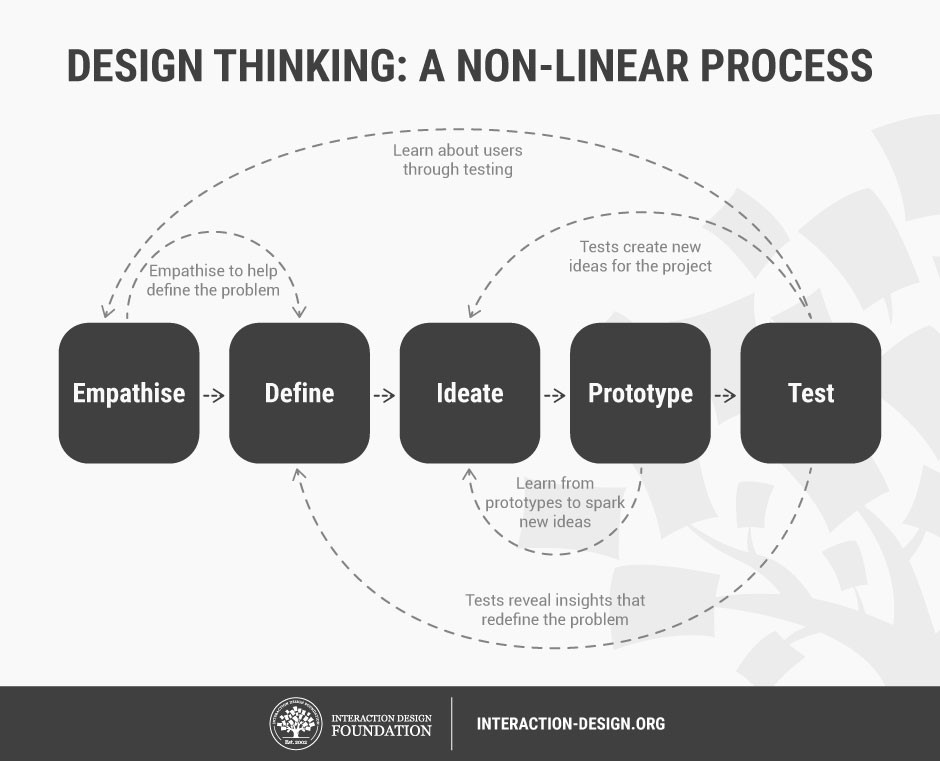

Integrating
Automation and Drawing
in Visualization Design Workflows
Integrating
Automation and Drawing
in Visualization Design Workflows
modalities
Contribution Summary
- Interviews and observations of designers working with data
- Bridge Model: iteration with automated visualizations
- Proposed research: iteration with drawn visualizations
Related Work
Workflows


Design Study Methodology: Reflections from the Trenches and the Stacks
Michael Sedlmair, Miriah Meyer, and Tamara Munzner Infovis 2012
iteration
Related Work
Workflows
Developers always [say]: 'here is your flow, you go through these steps, here are the tools, here are the things you can do, here are things you can’t do.'
I don’t think designers want that. Designers want to do what they want to do....
[They] want to create something that you've never seen before.
Related Work
Automated Visualization Toolkits
- Formal specification of rules, computer does the drawing
- Examples: D3, Processing, Excel, Tableau, Gephi
- Pros:
- Create precise visual representations of data efficiently
- Scalable; time spent does not depend on data size
- Cons:
- Every graphics element must be formally specified,
either by the user... or the toolkit developer - Designers don't use them in isolation
- Every graphics element must be formally specified,
Related Work
Drawing Software
- (w.r.t. data:) informal rules, human does the drawing
- Examples: Illustrator, Photoshop, Inkscape
- Pros:
- User is free to draw what they want
- Direct manipulation faster, easier than formal specification
- Cons:
- Precision
- Scalability
Related Work
Hybrid-Modality Tools
- Mix automation and drawing in same interface, interactions
- Examples: Lyra, iVisDesigner, DDG, iVoLVER, Data Illustrator
- Pros:
- Automation + Direct manipulation ?
- Cons:
- Limited features
- Usability issues / steep learning curve (why?)
Related Work
Transitions
- Automation to Drawing
- Drawing to Automation
Related Work
Transitions: Automation to Drawing
- Helper tools: SVG Crowbar, RAW
- Graphics programs designed to edit existing graphics formats
- Grammars: Vega, Vega-lite, ggplot
- Not designed to be edited with existing drawing programs
- Can switch from automation to drawing...
but data bindings are lost
Related Work
Transitions: Drawing to Automation
- No existing tools support this
- Automated programs need data bindings
- Similar ideas: D3 Deconstructor, iVoLVER
- Automated programs need formal rules to enact designer intent
- Learning visual encodings
Reverse-Engineering Visualizations: Recovering Visual Encodings from Chart Images
Jorge Poco, Angela Mayhua, Jeff Heer Infovis 2017
Extracting and Retargeting Color Mappings from Bitmap Images of Visualizations
Jorge Poco, Jeff Heer Eurovis 2017
Why iteration?
Interviews, observations of designers
Reflections on How Designers Design With Data
Alex Bigelow, Steven Drucker, Danyel Fisher, and Miriah Meyer AVI 2014
Why iteration?
Designers, context
Why iteration?
What we learned
- Relaxing the sequence of operations
- Placing data on existing graphics
- Manual encoding has its benefits
Why iteration?
Manual encoding
I am amazed at what people will sit through in terms of doing something manually with Illustrator or InDesign... not all of it is unenjoyable for them.... There’s something great about just sitting there [with] my music on... [and getting] it perfect.
Supporting iteration
- Bridge Model: iteration with automated visualizations
- Proposed research: iteration with drawn visualizations
Bridge Model
Iteration with automated visualizations
Hanpuku
Bridge Model
Iteration with automated visualizations
-
Key ideas:
- Preserve data bindings
across programs - Merge changes
- Preserve data bindings
-
Design space: How does a bridge...
- ...identify what changed in each tool?
- ...merge the identified changes?
- ...reintegrate the merged results?
- ...infer designer intent ? ...infer designer intent?
Iterating Between Tools to Create and Edit Visualizations
Alex Bigelow, Steven Drucker, Danyel Fisher, and Miriah Meyer Infovis 2016
Proposed research
Iteration with drawn visualizations
Proposed research
Iteration with drawn visualizations
- Key idea: learn designer's mental rules from patterns in a drawing
- Constant rules
- Structural rules
- Data rules
Proposed research
Iteration with drawn visualizations
Anticipated Challenges, Contributions:
- How can the user indicate data bindings?
- How can the computer discover rules?
- How can an interface communicate rules?
- How can the user manipulate and apply rules?
- How can we do these things with real graphics formats?
Proposed research
Iteration with drawn visualizations
Timeline:- January 2018: Finish inference module, sync with Illustrator
- February 2018: Demonstrate use cases
- March 2018: Write, submit paper to InfoVis / UIST
- May 2018: Write, defend dissertation
Proposed research
Iteration with drawn visualizations
Stretch goals... or future work:- Non-linear rules
- Prototype, re-implement modules for usability, not just feasibility